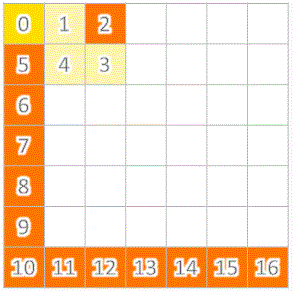

Path Finder


Overview of Path Finder
Created for CS 230 Data Structures class (Fall 2014)
A grid-maze game: player must maneuver piece to target destination in fewest number of steps possible (if multiple targets, the player must strategize in which order to visit each target to minimize steps traveled)
- Written in Java (17 classes total)
- Graph algorithms (breadth-first search), stacks, recursion, scanning in and printing out to text files, graphical user interface
- Features: undo & reset (with keyboard shortcuts), completely randomized levels, customizable levels, computer hints
Important classes & methods
public int getX()
public int getY()
public boolean getE()
public boolean getN()
public boolean getS()
public boolean getW()
public void setE(boolean value)
public void setN(boolean value)
public void setS(boolean value)
public void setW(boolean value)
public boolean hasPrevious()
public GridCoordinate getPrevious()
public void setPrevious(GridCoordinate n)
public boolean equals(GridCoordinate other)
public int getBackwardsCoordinate()
public int getCoordinate()
public String toString()
throws FileNotFoundException
public GridGraph(int w, int h)
private void constructRandomGridGraph(int w, int h)
private GridCoordinate randomGridCoordinate(int
width,int height)
private boolean isTaken(GridCoordinate gc)
public int getLevel()
public int getWidth()
public int getHeight()
public GridCoordinate getBegin()
public ArrayList
public ArrayList
public int getShortestPath()
private int shortestPath(GridCoordinate start,
ArrayList
private int pathLength(LinkedList
private LinkedList
GridCoordinate target)
private GridCoordinate findGridCoordinate(int x,
int y)
private void removeVertex(int x, int y)
private GridCoordinate getVertex(int x, int y)
private boolean isVisited(GridCoordinate v)
private void setVisited(GridCoordinate v)
public String toString()
public int getStepCount()
public void reset()
public void undo()
private void undoMove(int direction)
public void move(int direction)
private boolean isTarget(int x, int y)
private boolean isValidMove(int direction)
private boolean isValidPosition(int x, int y)
public boolean levelComplete()
public void loadNextLevel()
public void loadRandomLevel(int w, int h)
public void updateNextLabel()
public void updateStepsLabel()
Calculating the shortest path for a SINGLE target
To determine the length of the shortest path from a start position to a single target, we used a breadth-first search, and then traced back through the traversal to reconstruct the cheapest path. Click on the gif below to play/restart
Calculating the shortest path for MULTIPLE targets
This algorithm was pretty tricky. At first, we thought that we could determine the shortest path through the grid by advancing to the CLOSEST target to our CURRENT position. We ran this algorithm on the whiteboard and it seemed to work great (yayyy)! We wrote up the code, ran our game, and after a few successful tests, we came across a scenario that "broke" our algorithm. It seemed that our algorithm was easily "baited", or distracted, by targets that led us down a costly path. We decided to use RECURSION (dun dun dunnn) to account for every single possible option/path. I'm sure this isn't the most efficient solution, but having not yet taken an algorithms course, it was exciting to accidentally venture into the world of algorithms during this project.
Initial (fake) success! Our greedy algorithm passed the first few tests.
Oh no! Our algorithm is broken! It was "baited", or led down, the more costly path.
Recursion to the rescue! Though probably unnecessarily inefficient...
